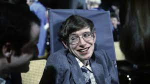

Stephen William Hawking CH CBE FRS FRSA (AFI: ['stivən 'hɔkɪŋ]; Oxford, 8 de janeiro de 1942 – Cambridge, 14 de março de 2018)[4] foi um físico teórico, cosmólogo e autor britânico, reconhecido internacionalmente por sua contribuição à ciência, sendo um dos mais renomados cientistas do século.[5][6] Doutor em cosmologia, foi professor lucasiano emérito na Universidade de Cambridge,[7] um posto que foi ocupado por Isaac Newton, Paul Dirac e Charles Babbage. Foi, pouco antes de falecer, diretor de pesquisa do Departamento de Matemática Aplicada e Física Teórica (DAMTP) e fundador do Centro de Cosmologia Teórica (CTC) da Universidade de Cambridge. Seus trabalhos científicos incluem um teorema sobre a singularidade gravitacional no âmbito da relatividade geral (em colaboração com Roger Penrose) e a previsão teórica de que os buracos negros emitem radiação, frequentemente chamada de Radiação Hawking. Hawking foi o primeiro cientista a estabelecer uma teoria da cosmologia explicada pela união da teoria geral da relatividade e da mecânica quântica. Ele foi um defensor fervoroso da interpretação de muitos mundos na mecânica quântica.  Os principais campos de pesquisa de Hawking foram cosmologia teórica e gravidade quântica. Em 1971, em colaboração com Roger Penrose, provou o primeiro de muitos teoremas de singularidade; tais teoremas fornecem um conjunto de condições suficientes para a existência de uma singularidade no espaço-tempo. Este trabalho demonstra que, longe de serem curiosidades matemáticas que aparecem apenas em casos especiais, singularidades são uma característica genérica da relatividade geral.[carece de fontes] Hawking também sugeriu que, após o Big Bang, primordiais ou miniburacos negros foram formados. Com Bardeen e Carter, ele propôs as quatro leis da mecânica de buraco negro, fazendo uma analogia com termodinâmica. Em 1974 calculou que buracos negros deveriam, termicamente, criar ou emitir partículas subatômicas, conhecidas como radiação Hawking, além disso, também demonstrou a possível existência de miniburacos negros. Hawking também participou dos primeiros desenvolvimentos da teoria da inflação cósmica no início da década de 1980 com outros físicos como Alan Guth, Andrei Linde e Paul Steinhardt, teoria que tinha como proposta a solução dos principais problemas do modelo padrão do Big Bang.[carece de fontes] Hawking escreveu diversos livros que ajudaram a divulgar complexas teorias cosmológicas em linguagem fácil para leigos. O primeiro foi Uma Breve História do Tempo, escrito entre 1982 e 1984 e vendendo mais de 10 milhões de cópias. Obras seguintes incluem O Universo numa Casca de Noz (2001), Uma Nova História do Tempo (2005, versão atualizada de sua estreia co-escrita com Leonard Mlodinow) e God Created the Integers (2006). Em parceria com sua filha Lucy, Hawking também escreveu livros infantis sobre o universo com George e o Segredo do Universo (2007) e suas duas continuações.[79] O asteróide 7672 Hawking foi nomeado em sua homenagem. Hawking alcançou sucesso comercial com vários trabalhos nos quais ele discute suas próprias teorias e cosmologia em geral. Seu livro Uma Breve História do Tempo permaneceu na lista de mais vendidos do The Sunday Times durante 237 semanas. Em 2002, Hawking ficou em 25º lugar na pesquisa da BBC sobre os 100 Maiores Britânicos de todos os tempos. Em 1963, Hawking foi diagnosticado com uma forma de início precoce da doença neuronal motora (MND; também conhecida como esclerose lateral amiotrófica (ELA) "ALS" ou doença de Lou Gehrig) que o paralisou gradualmente ao longo das décadas.[11][12] Mesmo após a perda de sua capacidade de falar, ele ainda era capaz de se comunicar por meio de um dispositivo gerador de fala, inicialmente através do uso de um interruptor de mão e, mais tarde, usando um único músculo da bochecha. Ele morreu no dia 14 de março de 2018, aos 76 anos de idade, depois de lutar contra essa doença durante mais de 50 anos. Apesar de ter sido um físico conhecido e renomado, muitos físicos criticaram Hawking, argumentando que ele agia mais como um astro pop do que como um físico. Em 2004, ao ter anunciado que havia solucionado o paradoxo da informação, Hawking chamou a atenção de físicos do mundo inteiro, porém não apresentou os cálculos, à época, o que fez apenas em 2005.[38] Dez anos depois, chegou a dizer que os buracos negros não existem, apesar de ser consenso entre os físicos que eles existem, porém novamente ele não apresentou nenhuma comprovação matemática. Novamente em 2014, Hawking alertou a humanidade que a manipulação de Bóson de Higgs poderia levar à destruição do universo, mas a comunidade científica não deu apoio a essa tese. Ele chegou, inclusive, a apostar com um físico da Universidade de Michigan que o Bóson de Higgs não existia. Peter Higgs, que fez a descoberta do Bóson de Higgs, disse que era difícil discutir com Hawking por causa de seu status de celebridade. O cosmólogo brasileiro Mario Novello afirmou em fevereiro de 2015 que a ciência havia se tornado midiática e Hawking atuava como uma celebridade. Hawking se descrevia como ateu.[67][68][69][70][71] Em algumas ocasiões, usou a palavra "Deus" em seus livros e discursos, mas, segundo ele próprio, no sentido metafórico e relativo. Sua ex-esposa Jane afirmou que, durante o processo de divórcio, ele se descreveu como ateu. Hawking declarou que não era religioso no sentido comum, e que acreditava que "o universo é governado pelas leis da ciência.[72] Hawking comparou a ciência e a religião durante uma entrevista, dizendo "há uma diferença fundamental entre a religião, que se baseia na autoridade, e a ciência, que se baseia na observação e na razão. A ciência vai ganhar porque ela funciona". Em alguns trechos de seus livros, Hawking também parece seguir uma linha de pensamento similar à de Einstein e Espinoza, no que tange à admiração e o deslumbre pela ordem e complexidade presentes no universo, ainda que nunca tenha referido a si próprio como panteísta.[73][74][75] No livro Uma Breve História do Tempo ele cita que "tanto quanto o Universo teve um princípio, nós poderíamos supor que tenha um Criador". Ainda nesse livro, ele diz que "no entanto, se nós descobrirmos uma teoria completa, então nós conheceríamos a mente de Deus".[76] Porém, em seu mais recente e polêmico livro "The Grand Design", Stephen Hawking mudou suas antigas declarações sobre a ideia de um criador[77] e afirma que "Deus não tem mais lugar nas teorias sobre c riação do universo, devido a uma série de avanços no campo da física". No livro, afirma que "Por haver uma lei como a gravidade, o universo pode e irá criar a ele mesmo do nada. A criação espontânea é a razão pela qual algo existe ao invés de não existir nada, é a razão pela qual o universo existe, pela qual nós existimos", dizendo que o Big Bang foi simplesmente uma consequência da lei da gravidade. Hawking também cita a descoberta, feita em 1992, de um planeta que orbita uma estrela fora do Sistema Solar, como um marco contra a crença de Isaac Newton de que o universo não poderia ter surgido do caos.[carece de fontes] Em sua última obra Brief Answers to the Big Questions, publicada em 2018, Hawking escreve "Não há Deus. Ninguém dirige o universo. Durante séculos, acreditava-se que pessoas com deficiência como eu estavam vivendo sob uma maldição que foi infligida por Deus. Eu prefiro pensar que tudo pode ser explicado de outra maneira, pelas leis da natureza". Breve História do Tempo: do Big Bang aos Buracos Negros (edição portuguesa de A brief history of time). Lisboa: Gradiva, 1988. ISBN 972-662-010-4 Uma Breve História do Tempo: do Big Bang aos Buracos Negros (edição brasileira de A brief history of time). Rio de Janeiro: Rocco, 1988. ISBN 85-325-0252-0 Buracos Negros, Universos-Bebês e outros Ensaios. Porto: ASA, 1994. ISBN 972-41-1508-9 O Fim da Física. Lisboa: Gradiva, 1994. ISBN 972-662-345-8 A Natureza do Espaço e do Tempo (em co-autoria com Roger Penrose). Lisboa: Gradiva, 1996. ISBN 972-662-466-0 Breve História do Tempo Ilustrada. Curitiba: Editora Albert Einstein, 1997. Lisboa: Gradiva, 1998. ISBN 972-662-511-4 O Universo numa Casca de Noz. São Paulo: Mandarim, 2001. Lisboa: Gradiva, 2002. ISBN 972-662-826-1 O Futuro do Espaço-Tempo (em co-autoria com Alan Lightman, Kip Thorne, Igor Novikov e Timothy Ferris). São Paulo: Companhia das Letras, 2005. ISBN 9788535906080 Os Gênios da Ciência: Sobre os Ombros de Gigantes. Rio de Janeiro: Elsevier, 2005. ISBN 85-352-1525-5 Uma Nova História do Tempo (em co-autoria com Leonard Mlodinow: edição brasileira de A briefer history of time). Rio de Janeiro: Ediouro, 2005. ISBN 85-00-01857-7 Brevíssima História do Tempo (em co-autoria com Leonard Mlodinow: edição portuguesa de A briefer history of time). Lisboa: Gradiva, 2007. ISBN 978-989-616-164-4 George e o Segredo do Universo (em co-autoria com Lucy Hawking). Rio de Janeiro: Ediouro, 2007 (As ideias e conceitos de Física e Astrofísica de Hawking sobre o Universo, contadas em um enredo de aventura voltado para as crianças). ISBN 978-85-00-02222-7 O Grande Projeto (em co-autoria com Leonard Mlodinow). Rio de Janeiro: Nova Fronteira, 2011. ISBN 978-85-20-92657-4 Minha Breve História. Rio de Janeiro: Intrínseca, 2013. ISBN 978-85-8057-425-8 Brief Answers to the Big Questions, 2018. ISBN 978-14-7369-598-6 [81] Unlocking the Universe, 2020 ISBN 9780241418864.